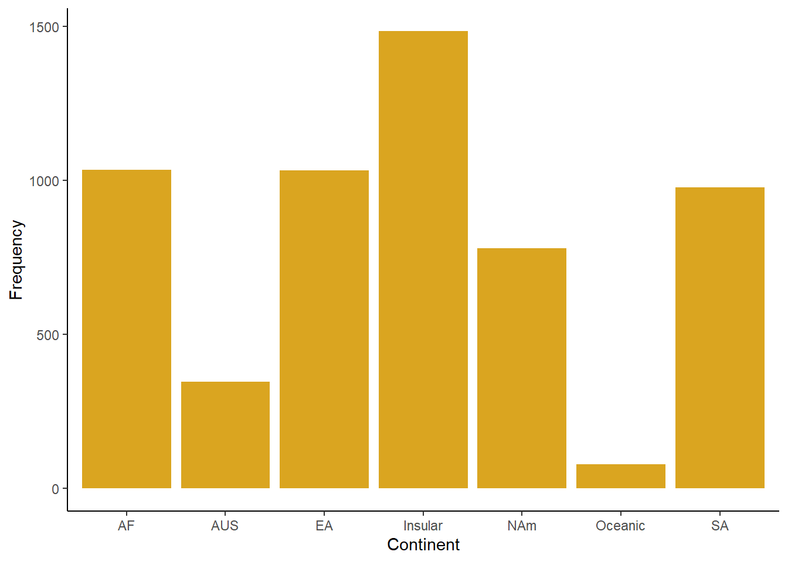
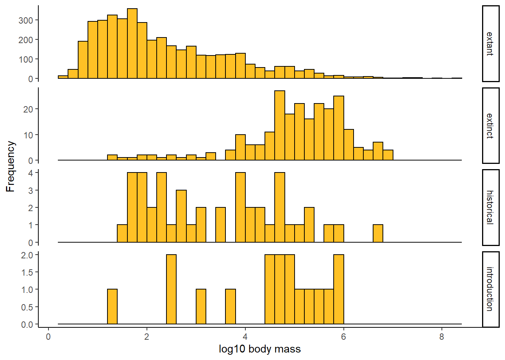

create a good header section and table of contents
save the script file with an informative name
set your working directory
Aim to make the script useful as a future reference for doing things in R - this will come in handy for projects and assessments!
3 Displaying data using graphs and tables
The purpose of this lab is to tour the table and graphics capabilities of R, and to explore the best methods for displaying patterns in data. We will do this by exploring some real datasets.
4 DATA: Mammal body mass**
These data were published as a data paper in Ecology and deposited in the Ecological Archives (F. A. Smith, S. K. Lyons, S. K. M. Ernest, K. E. Jones, D. M. Kaufman, T. Dayan, P. A. Marquet, J. H. Brown, and J. P. Haskell. 2003. Body mass of late Quaternary mammals. Ecology 84: 3403.)
Most of the variables are categorical, with multiple named categories. “Continent” includes mammals on islands (“Insular” category) whereas “Oceanic” refers to marine mammals. Body mass (in grams) is the sole numeric variable. The “status” variable indicates whether species is currently present in the wild (extant), extinct as of late Pleistocene (extinct), extinct within the last 300 years (historical), or an introduced species (introduction).
4.1 Read and examine the data
The data file we will work with is biogeogMammals.csv.
Read the contents of the file to a data frame.
Use the head() function to view the first few lines of the data frame on the screen. You’ll see that every row represents the data for a different mammal species.
4.2 Frequency tables
Which continent has the greatest number of mammal species? Which has the least? Make a table (e.g., using table()) of the frequency of cases on each continent.
2.You’ll notice in the frequency table for the variable “continent” that there’s a typo in the data. One case is shown as having the continent Af rather than AF. Fix this using the command line in R and recalculate the frequency table.
3.How many extinct mammals are recorded in the data file? Use a frequency table to find out. Create a two-way frequency table (contingency table) showing the status of mammal species on each continent.
4.Judging by eye, which continent has the greatest number of extinctions relative to the number of extant species?
4.3 Suggested solutions
All lines below beginning with double hashes are R output
# Load the packages you might need# Load data# NB your file path may be different than minemammals <-read.csv("data/biogeogMammals.csv")head(mammals)
continent status order family genus species mass.grams
1 AF extant Artiodactyla Bovidae Addax nasomaculatus 70000.3
2 AF extant Artiodactyla Bovidae Aepyceros melampus 52500.1
3 AF extant Artiodactyla Bovidae Alcelaphus buselaphus 171001.5
4 AF extant Artiodactyla Bovidae Ammodorcas clarkei 28049.8
5 AF extant Artiodactyla Bovidae Ammotragus lervia 48000.0
6 AF extant Artiodactyla Bovidae Antidorcas marsupialis 39049.9
# Number of mammal species on each continenttable(mammals$continent)
Af AF AUS EA Insular NAm Oceanic SA
1 1033 346 1033 1484 779 78 977
# Fix "Af"which(mammals$continent=="Af")
[1] 322
mammals$continent[322]<-"AF"# replace the wrong valuetable(mammals$continent) # now the table is fixed
AF AUS EA Insular NAm Oceanic SA
1034 346 1033 1484 779 78 977
# How many extinct mammals?# The table shows that 242 species of mammal are listed as extinctz <-table(mammals$status)z
# Extinction status by continent (contingency table)# The table shows that Australia (AUS) has the greatest number of extinct species# relative to the total number.table(mammals$continent, mammals$status)
extant extinct historical introduction
AF 1017 13 4 0
AUS 261 45 23 17
EA 1027 0 6 0
Insular 1405 29 50 0
NAm 700 78 1 0
Oceanic 78 0 0 0
SA 900 77 0 0
5 EXAMPLE: Graphing frequency distributions
Plot the number of mammal species on each continent using a simple bar graph. Include a label for the y axis.
The plot categories are listed in alphabetical order by default, which is arbitrary and makes the visual display less efficient than other possibilities. Redo the bar graph with the continents appearing in order of decreasing numbers of species.
Generate a histogram of the body masses of mammal species. How informative is that?!
Create a new variable in the mammal data frame: the log (base 10) of body mass. (See “Transform and add a variable” on the R tips “Data” page if you need help with this.)
Generate a histogram of log body mass. Is this more informative? Morphological data commonly require a log-transformation to analyze.
Redo the previous histogram but use a bin width of 2 units. How much detail is lost?
Redo the histogram but try a bin width of of 1; then try 0.5; and then 0.1. Which bin width is superior?
Redo the histogram, but display probability density instead of frequency.
How does the frequency distribution of log body mass depart from a normal distribution? Answer by visual examination of the histogram you just created. Now answer by examining a normal quantile plot instead. Which display is more informative?
Optional: redraw the histogram of log body mass and superimpose a normal density curve to assess help detect deviations from normality.
5.1 Suggested solutions
# Load the packages you might needlibrary(ggplot2)# Bar plot of mammal species by continentbarplot(table(mammals$continent),col ="goldenrod",cex.names =0.8,ylim =c(0, 1600),las =1)
# ggplot methodsggplot(mammals, aes(x = continent)) +geom_bar(stat ="count", fill ="goldenrod") +labs(x ="Continent", y ="Frequency") +theme_classic()

# To order by category in ggplot, first make a new factor variablemammals$continent_ordered <-factor(mammals$continent,levels =names(sort(table(mammals$continent),decreasing =TRUE)))ggplot(mammals, aes(x = continent_ordered)) +geom_bar(stat ="count", fill ="goldenrod") +labs(x ="Continent", y ="Frequency") +theme_classic()
# Histogram of body masseshist(mammals$mass.grams, col="goldenrod", right =FALSE, las =1, xlab ="Body mass (g)", main ="")
# Add a new variable, log10 of body massmammals$logmass <-log10(mammals$mass.grams)hist(mammals$logmass, col="goldenrod", right =FALSE, las =1,xlab ="Log10 body mass", main ="", breaks =seq(0, 8.5, by =0.5))
Same but using ggplot. You’ll see a Warning: Removed rows containing non-finite values. These are rows with missing data on mass. Use the argument na.rm = TRUE in geom_histogram to get rid of the warning.
ggplot(mammals, aes(x = logmass)) +geom_histogram(fill ="goldenrod", col ="black", binwidth =0.5, boundary =0) +labs(x ="log10 body mass", y ="Frequency") +theme_classic()
# Plot density insteadhist(mammals$logmass, col="goldenrod", right =FALSE, las =1, prob =TRUE,xlab ="Log10 body mass", main ="", breaks =seq(0, 8.5, by =0.5))
# with ggplotggplot(mammals, aes(x = logmass)) +geom_histogram(fill ="goldenrod", col ="black", binwidth =0.5, boundary =0, aes(y = ..density..)) +labs(x ="log10 body mass", y ="Density") +theme_classic()
# Normal quantile plotqqnorm(mammals$logmass)# adds the straight line for comparison through 1st and 3rd quartilesqqline(mammals$logmass, col ='red')
# Histogram with best-fit normal curve superimposed.# The curve function is fussy about the name of the variable: must be "x"x <- mammals$logmasshist( x,col ="goldenrod",right =FALSE,las =1,prob =TRUE,xlab ="Log10 body mass",main ="",breaks =seq(0, 8.5, by =0.5))m <-mean(x, na.rm =TRUE)s <-sd(x, na.rm =TRUE)curve(dnorm(x, mean = m, sd = s),col ="blue",lwd =3,lty =3,add =TRUE)
6 EXAMPLE Comparing frequency distributions
Use a box plot to compare the distribution of body sizes (log scale most revealing) of mammals having different extinction status. Are extinct mammals similar to, larger than, or smaller than, extant mammals?
Examine the previous box plot. How do the shapes of the body size distributions compare between extinct and extant mammals?
Redo the previous box plot but make box width proportional to the square root of sample size. Add a title to the plot.
Draw a violin plot to compare the frequency distribution of log body sizes of mammals having different extinction status. Which do you find is more revealing about the shapes of the body size distributions: box plot or violin plot?
Use multiple histograms to compare the frequency distribution of log body sizes of mammals having different extinction status. Stack the panels one above the other. In this plot, how easy is it to visualize differences among treatments in the distributions compared to your previous plots?
Make a table of the median log body mass of each extinction-status group of mammals. Are the values consistent with the plotted distributions?
Suggested solutions
All lines below beginning with double hashes are R output
# Box plot to compare the distribution of body sizes# Extinct mammals tend to have large mass compared to extant mammals.# The frequency distributions for these two groups also have opposite skew.boxplot(logmass ~ status, data = mammals, ylab ="log10 body mass", col ="goldenrod1", las =1)
# or ggplot methodggplot(mammals, aes(x = status, y = logmass)) +geom_boxplot(fill ="goldenrod1", notch =FALSE) +labs(x ="Status", y ="Log10 body mass") +theme_classic()
# Violin plotggplot(mammals, aes(x = status, y = logmass)) +geom_violin(fill ="goldenrod1") +labs(x ="Status", y ="Log10 body mass") +stat_summary(fun.y = mean, geom ="point", color ="black") +theme_classic()
# Multiple histogramsggplot(mammals, aes(x = logmass)) +geom_histogram(fill ="goldenrod1", col ="black", binwidth =0.2, boundary =0) +labs(x ="log10 body mass", y ="Frequency") +facet_wrap(~status, ncol =1, scales ="free_y", strip.position ="right") +theme_classic()

7 DATA: Fly sex and longevity
The data are from L. Partridge and M. Farquhar (1981), Sexual activity and the lifespan of male fruit flies, Nature 294: 580-581. The experiment placed male fruit flies with varying numbers of previously-mated or virgin females to investigate how mating activity affects male lifespan. The data are in the file fruitflies.csv.
7.1 Inspect the data
Open the data file in a spreadsheet program to have a look at it. View the first few lines of the data frame on the screen, and familiarize yourself with the variable names.
Our goal here is to find a plot type that clearly and efficiently visualizes the patterns in the data, especially the differences among groups.
7.2 Analysis
Read the data file into a new data frame.
Use a strip chart to examine the distribution of longevities in the treatment groups. Try the jitter method to reduce overlap between points. If needed, adjust the size or rotation of the treatment labels so that they all fit on the graph. What pattern of differences between treatments in longevity is revealed?
Compare the strip chart to a box plot of the same data. Is the pattern in the data as clear in both types of plot?
The variable thorax stands for thorax length, which was used as a measure of body size. The measurement was included in case body size also affected longevity. Produce a scatter plot of thorax length and longevity. Make longevity the response variable (i.e., plot it on the vertical axis). Is there a relationship?
Redraw the scatter plot but this time use different symbols or colors for the different treatment groups. Add a legend to identify the symbols. Describe the pattern of differences between treatments.
Add scatterplot smoothers or linear regressions to the previous figure, one for each group. Do the differences in longevity among the treatments stand out when variation in body size is incorporated?
7.3 Suggested solutions
# Read and inspect data# NB your file path may be different than minex <-read.csv("data/fruitflies.csv")head(x)
# Scatter plot with ggplotggplot(x, aes(x = thorax.mm, y = longevity.days)) +geom_point(size =3, col ="blue") +labs(x ="Thorax length (mm)", y ="Longevity (days)") +theme_classic()
# Not run - just here to show code# Scatter plot with separate colors for each group plot( longevity.days ~ thorax.mm,data = x,pch =as.numeric(factor(treatment)),col =as.numeric(factor(treatment)),las =1,xlab ="Thorax length (mm)",ylab ="Longevity (days)")# NB the locator(1) function allows you to click ON YOUR PLOT# to place the legend... neat eh?# legend(# locator(1),# legend = as.character(levels(factor(x$treatment))),# pch = 1:length(levels(factor(x$treatment))),# col = 1:length(levels(factor(x$treatment)))# )legend(y =90, x = .65,legend =as.character(levels(factor(x$treatment))),pch =1:length(levels(factor(x$treatment))),col =1:length(levels(factor(x$treatment))))
# Scatter plot with separate colors for each group using ggplotggplot(x, aes(x = thorax.mm, y = longevity.days, colour = treatment, shape = treatment)) +geom_point(size =2) +labs(x ="Thorax length (mm)", y ="Longevity (days)") +theme_classic()